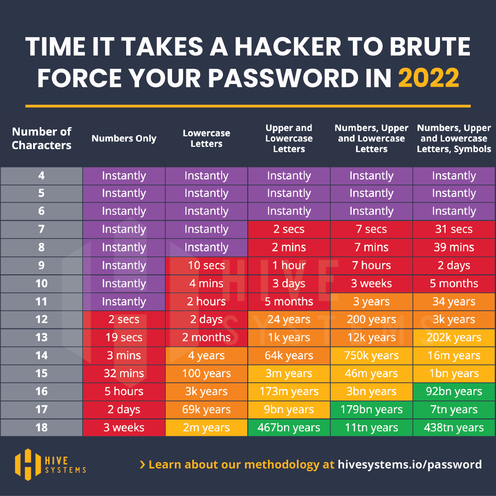

<div id="left"> <img src="img/DIL_logo_safespace_RGBFull Color.svg" alt="DIL logo" width="400"> </div> # Data security February 10, 2023
Passwords

Data storage
## Where? **UChicago Box** - Its defaults levels of encryption are good enough for almost all data, including personally identifying information and most personal health information - You do not need additional file encryption when storing data in Box, unless your data contains extra sensitive fields - If you are not sure if your data needs additional layers of security, check with the Chief Information Security Officer at ciso@uchicago.edu - For more information on this, see the [University Data Usage Guide](http://dataguide.uchicago.edu/) --- ## Who - Do not place data on publicly shared folders - Be mindful of who has access to the folders that contain your data - To share data, add collaborators to folders instead of sharing links - Only add collaborators at the minimum access level they require - Only add collaborators that have signed a confidentiality agreement or, if external, signed a data sharing agreement - If your data contains sensitive information, only share it with people listed in the IRB --- ## How - Only use UChicago-managed computers to work with proprietary or sensitive data - Follow the University's policy on [Baseline Protection of End User Devices](http://its.uchicago.edu/baseline-protection-of-end-user-devices/), including enabling full disk encryption and installing updates regularly - Use Box Drive (not Box Sync) to access the data, but do not download them to your hard drive. That is, do not check the option to make them available offline, and do not download them manually - To add another layer of security, use cVPN connection when working with sensitive data files off-campus - For more information about how to keep your devices and your information safe, see https://security.uchicago.edu/ --- ## Full disk encryption - Bitlocker on Windows and FileVault 2 on Mac - Checking for disk encryption on **DELL** computers: Start `>` Dell data security console - Checking for disk encryption on **Apple** computers: System Preferences `>` Security & Privacy `>` FileVault
Managing sensitive data
## Managing sensitive data - Have a special folder for identifying or sensitive data - Only people who **need** to work on this data should have access to this folder - As soon as you have access to the data, create a deidentified version without direct identifiers that other team members can use - Use anonymous IDs to connect the deidentified data to the sensitive data when necessary
Questions?